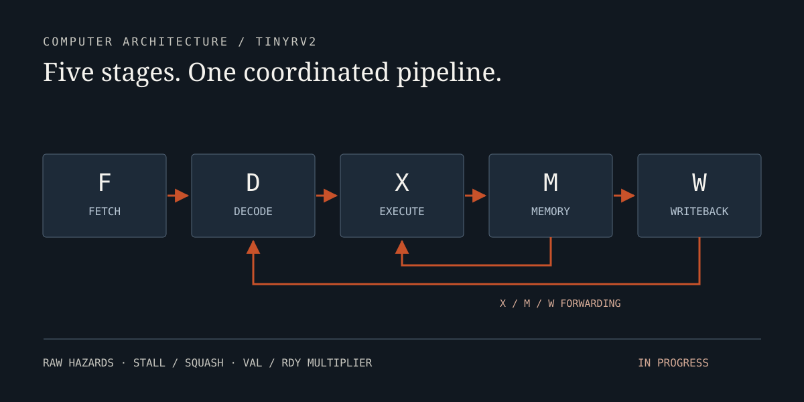
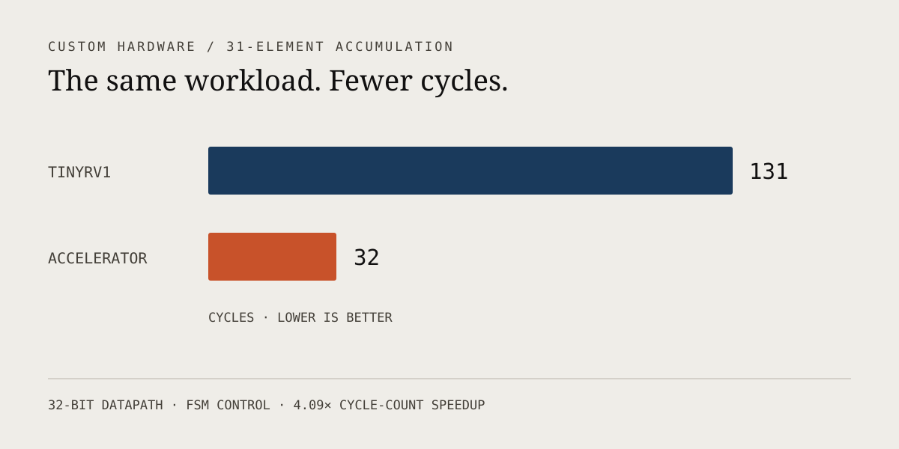
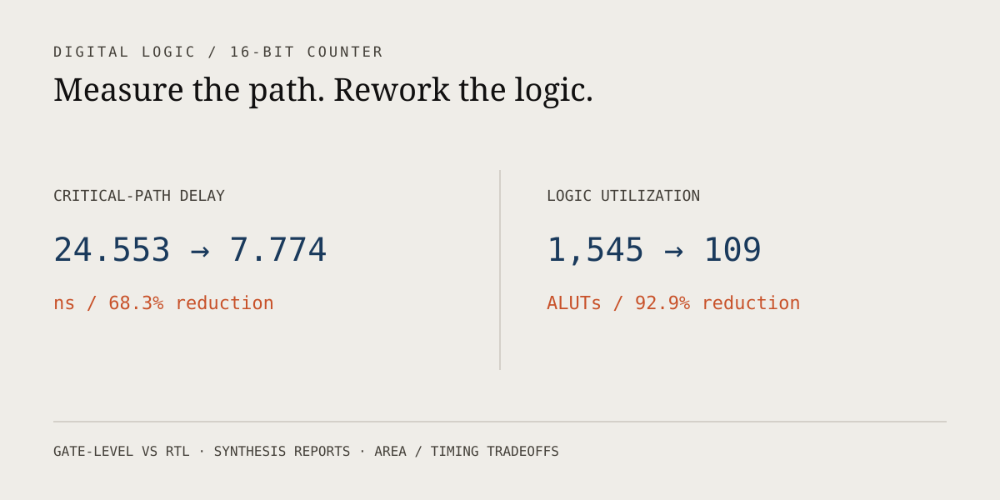
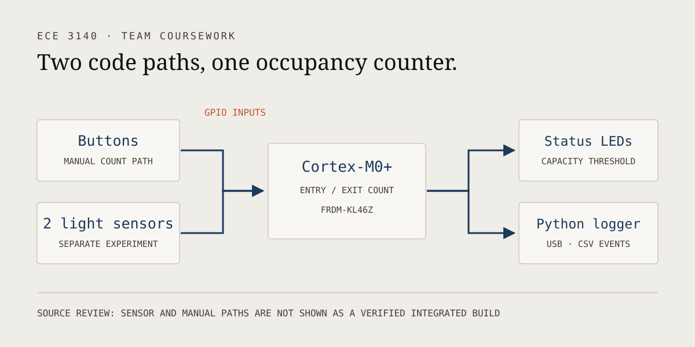
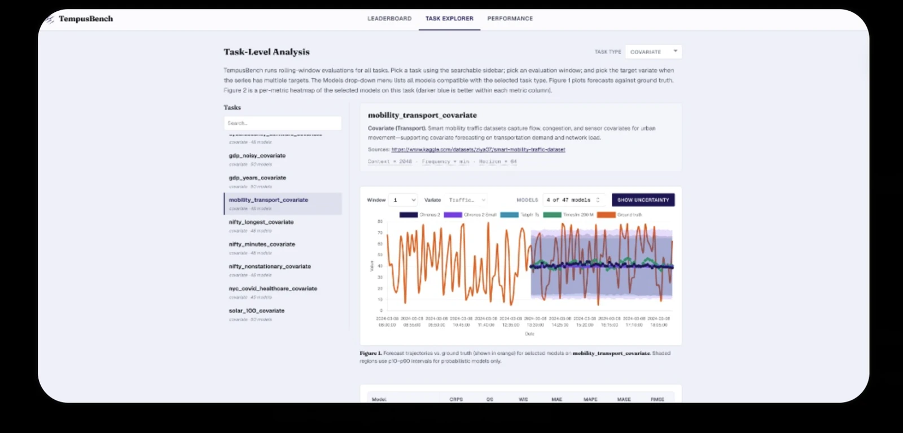
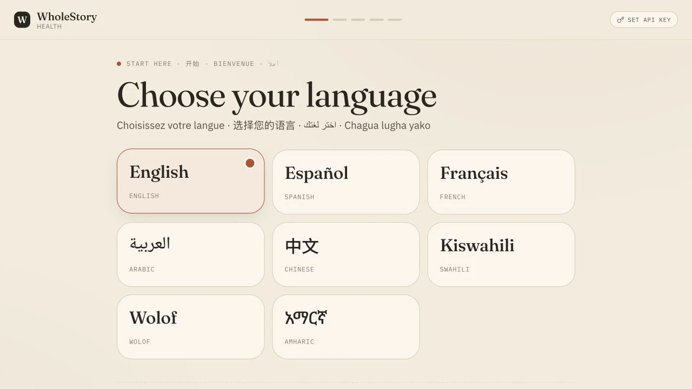
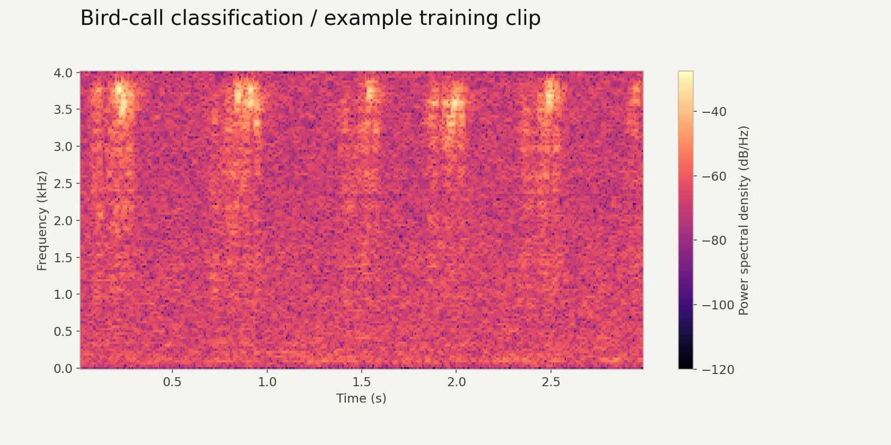
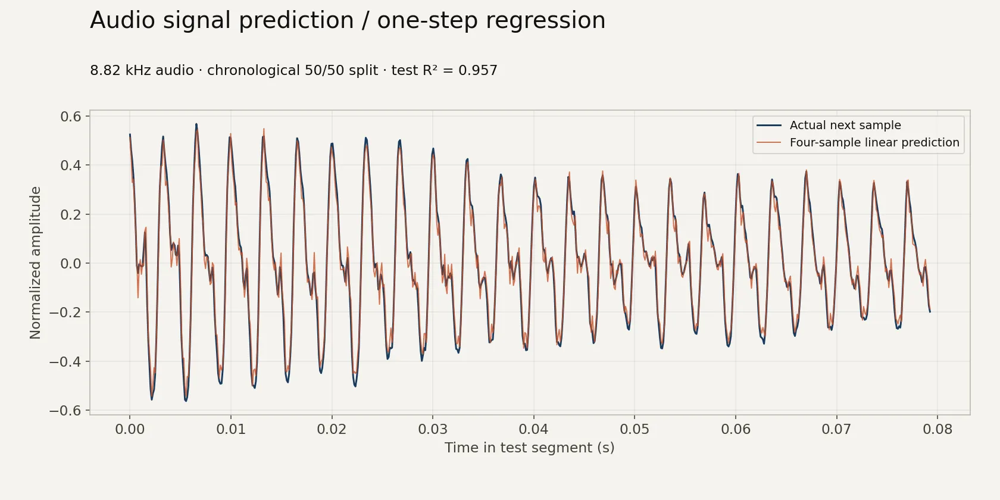
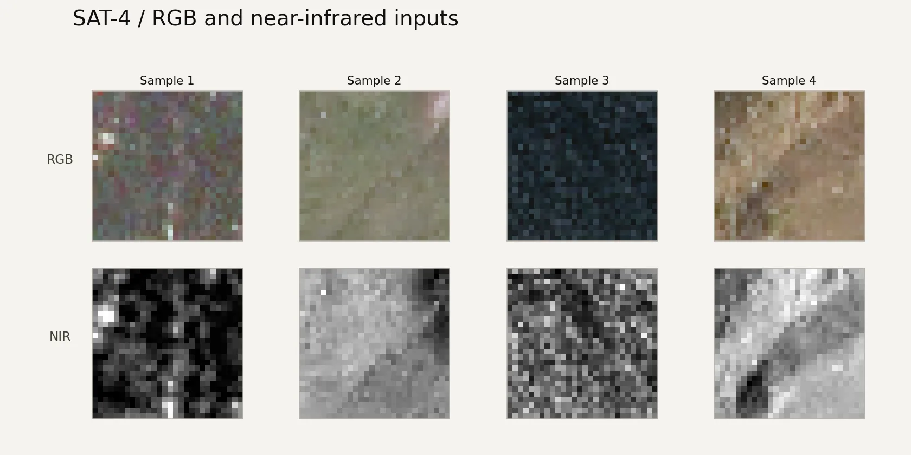
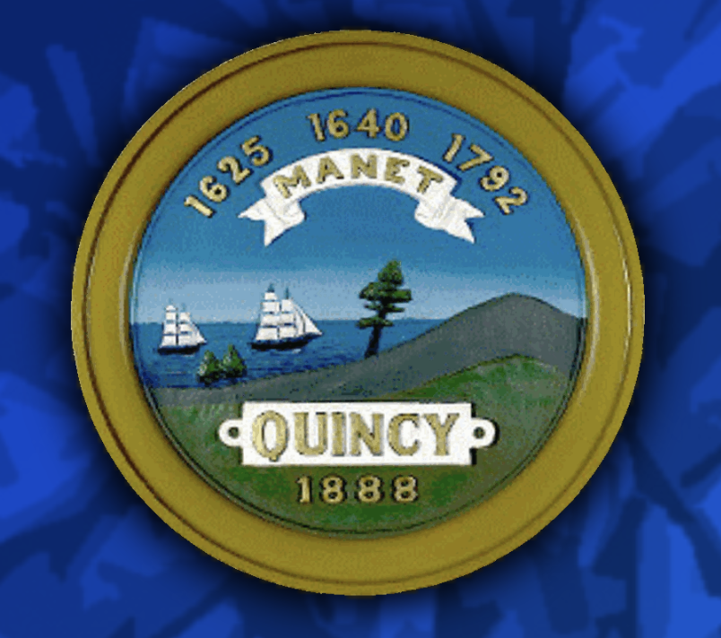

Projects
Things I’ve been building
From processor pipelines and real-time firmware to robotics, forecasting, and software people can use. Completed work and current experiments.
all projects

Computer architecture · Team project · Fall 2026 · In progress
Five-stage TinyRV2 with forwarding, hazard detection, stall/squash control, and a val/rdy multiplier. Directed and randomized RTL verification.
Engineering work
Implementing X/M/W forwarding, RAW hazard detection, and stall/squash control across the five pipeline stages. Designed fixed- and variable-latency iterative multipliers with FSM control and zero-bit skipping. Verilog · TinyRV2 · Microarchitecture · pytest

Digital hardware · Cornell ECE · December 2025
Single-cycle TinyRV1 plus a custom accumulation accelerator. Reduced a 31-element workload from 131 to 32 cycles: a 4.09× cycle-count speedup.
Engineering work
Built the 32-bit datapath, register file, instruction decoder, ALU control, and memory-mapped peripheral interfaces. Designed a custom 32-bit accumulation accelerator with address and sum datapaths, a 16-bit counter, and FSM control. Verilog · TinyRV1 · FPGA · FSM

Digital hardware · Cornell ECE · December 2025
16-bit counter optimization: critical path from 24.553 to 7.774 ns, logic from 1,545 to 109 ALUTs. Plus a Moore FSM music player.
Engineering work
Reduced the counter critical path by 68.3% and logic utilization by 92.9% in the evaluated FPGA implementations. Implemented programmable counters, registers, note-generation logic, and a Moore FSM for the music player. Verilog · Quartus · RTL · Timing analysis
Embedded systems · ARM Cortex-M0+ · 2025–2026
Context switching, spin/blocking locks, and Earliest Deadline First scheduling on a 1 ms timer, exercised with concurrency and deadline tests.
Engineering work
Implemented context switching, process-state queues, spin locks, and blocking locks in C and ARM assembly. Used a 1 ms interrupt-driven time base with Earliest Deadline First scheduling, deadline-ordered ready queues, and delayed task activation. C · ARM assembly · Cortex-M0+ · EDF

Embedded systems · Team project · May 2026
Two time-of-flight sensors, one I²C bus. Bare-metal direction detection, SPI display output, and UART event logging to Python.
Engineering work
Connected two VL53L0X time-of-flight sensors to a shared I²C bus on the FRDM-KL46Z. Sequenced XSHUT initialization and reassigned a sensor address to resolve the devices’ identical startup addresses. C · I²C · SPI · UART
Robotics · Electrical integration · July 2026
Six ESCs, Pixhawk, power distribution, GPS/compass, and live electrical telemetry. Calibrated interfaces and failsafes through bench and tethered tests.
Engineering work
Connected six ESCs, power-distribution hardware, GPS/compass, and a Pixhawk controller running ArduPilot. Enabled live voltage and current telemetry, and calibrated accelerometer, compass, ESC throttle ranges, and RC endpoints. Pixhawk · ArduPilot · ESCs · Power distribution
Robotics · Electrical & controls · January–September 2026
Closed-loop PID motor control, actuator interfaces, signal conditioning, and battery/DC/DC power systems validated under load.
Engineering work
Implemented PID motor control, actuator interfaces, signal-conditioning circuits, and embedded navigation control logic. Designed DC/DC regulation, battery management, and custom electrical interfaces. PID control · Motor drivers · DC/DC · Sensor feedback
Engineers Without Borders · Robotics & Hardware Systems Lead · October 2024–January 2026
Custom rover electronics, a ROS-controlled arm, GPS-guided aerial sensing, and crop-disease inference on NVIDIA Jetson.
Engineering work
Designed and fabricated custom PCBs, motor-driver circuits, and power-regulation subsystems; led board bring-up and hardware/software integration. Integrated a ROS-controlled robotic arm and diagnosed power and sensor-interface faults using laboratory instrumentation. ROS · NVIDIA Jetson · PCB bring-up · Computer vision

Machine learning · TempusBench evaluation · March–May 2026
30M+ NYC ride-hailing records across 263 zones. Reproducible zero-shot GPU evaluation of TiRex, TimesFM, and Kronos 2.
Engineering work
Prepared NYC mobility records for forecasting evaluation across 263 zones. Patched open-source forecasting code, dependencies, and configuration with Python and Bash to stabilize GPU evaluation. Python · Time series · TiRex · TimesFM

Clinical AI · Hackathon project · 2026
Multilingual speech, body mapping, and clinical summaries. An eight-language web demo alongside a separate offline Jetson NLP prototype.
Engineering work
Built an offline NLP prototype combining Whisper, language identification, neural translation, and spaCy entity extraction, with approximately 2-second pipeline latency. Applied Jetson model quantization to reduce memory use by 40% while maintaining evaluated accuracy. Python · Whisper · Jetson · React

Audio machine learning · Eight-class classification
20,000 labeled clips. MFCC, mel, spectral, and temporal features, a stratified validation split, and a five-model gradient-boosting ensemble.
Engineering work
Built a librosa preprocessing pipeline that resamples audio to 22.05 kHz and pads or trims recordings to three seconds. Extracted time-aggregated MFCCs and their first/second derivatives, mel spectra, chroma, spectral descriptors, zero crossings, and RMS energy. Python · librosa · scikit-learn · MFCC
Computer vision · Cornell ECE 3200/5200 · Spring 2026
Residual CNN for 15 overlapping digit-pair classes. Best logged validation accuracy: 97.66%, with augmentation, label smoothing, and OneCycle training.
Engineering work
Prepared 82,875 labeled 28 × 28 grayscale images with normalization and a stratified 80/20 validation split. Compared Gaussian Naive Bayes and softmax regression with a three-block residual CNN using BatchNorm, ReLU, pooling, and dropout. PyTorch · Residual CNN · Computer vision · Augmentation

Signal processing · Regression & regularization
One-step waveform prediction at 8.82 kHz. Reproduced test R² ≈ 0.957 using a four-sample linear predictor and a chronological split.
Engineering work
Built a NumPy/scikit-learn workflow for single-sample and sliding-window linear predictors. Separated the recording chronologically into training and test halves, preserving time order. Python · NumPy · Linear regression · Ridge

Remote sensing · k-NN & SVM · Cornell ECE 2720
Compared 3,136 raw RGB/NIR values with 8 engineered features for four land-cover classes. Includes parameter sweeps, errors, and support-vector analysis.
Engineering work
Compared k-nearest neighbors and RBF-kernel SVMs across neighborhood sizes and regularization settings. Engineered eight features from the means and standard deviations of hue, saturation, value, and near-infrared channels. Python · scikit-learn · SVM · k-NN
Environmental machine learning · EY AI Challenge · 2026
Modeling three water-quality targets from 9,319 records and 60 features. Compared tree models and Ridge regression with grouped cross-validation.
Engineering work
Prepared 9,319 training records with 60 features for dissolved reactive phosphorus, electrical conductance, and total alkalinity. Compared Random Forest, Extra Trees, and Ridge regression separately for each target. Python · scikit-learn · Feature engineering · GroupKFold
Interactive software · Solo build · Playable web demo
A playable 3D marble game with three challenges, drag-to-shoot controls, AI-opponent difficulty, and persistent progress.
Engineering work
Implemented a 3D web experience with React Three Fiber and Three.js. Built drag-to-shoot controls, trajectory calculation, power scaling, and rigid-body collision mechanics. React Three Fiber · Three.js · TypeScript · Zustand
Audio software · Personal project
Voice transformation and acoustic effects across web and iOS interfaces, combining audio processing with neural inference.
Engineering work
Developed audio-processing and voice-transformation workflows with custom acoustic presets. Worked with Web Audio API, Swift interfaces, and neural audio inference. DSP · Web Audio API · Swift · ONNX Runtime
Engineering analysis · Cornell ECE · Fall 2025
A technology-readiness and prior-art study connecting a Liquid Nanoparticle Ion Source with potential commercialization paths.
Engineering work
Researched prior art, patent positioning, and potential applications in satellite propulsion. Prepared a commercialization brief and presentation connecting the engineering concept with market and licensing considerations. TRL assessment · Patent research · Commercialization
Community engineering · Treasurer & volunteer
Computer troubleshooting, refurbishment, and organizational support for electronics reuse and technology access.
Engineering work
Helped troubleshoot and repurpose donated computers and supported the association’s organizational finances. Contributed to a team focused on repair, reuse, and technology access for underserved communities. Hardware troubleshooting · Electronics reuse · Community · Finance

Public works internship · Quincy, MA · Summer 2022
A field survey of pedestrian signals, signs, and crosswalks across 46 intersections, with findings and recommendations for city improvements.
Engineering work
Surveyed 46 intersections, testing pedestrian signals and documenting sign and crosswalk conditions. Prepared findings and recommendations to support intersection improvements. Field survey · Public infrastructure · Accessibility · Technical reporting